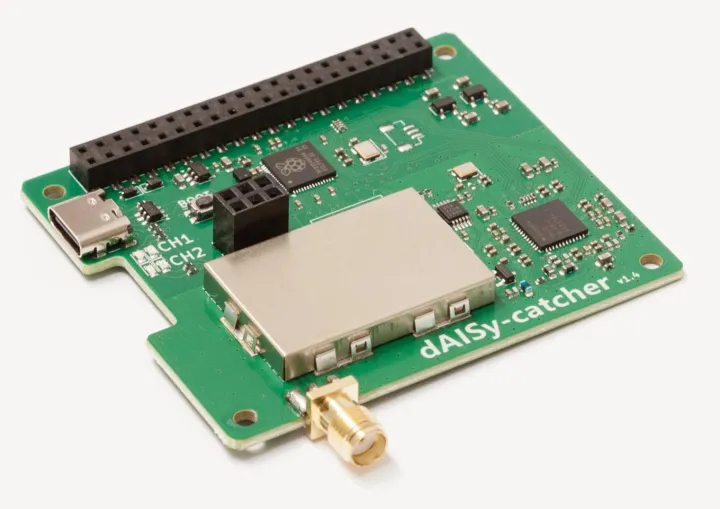
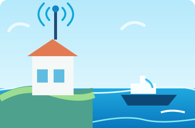
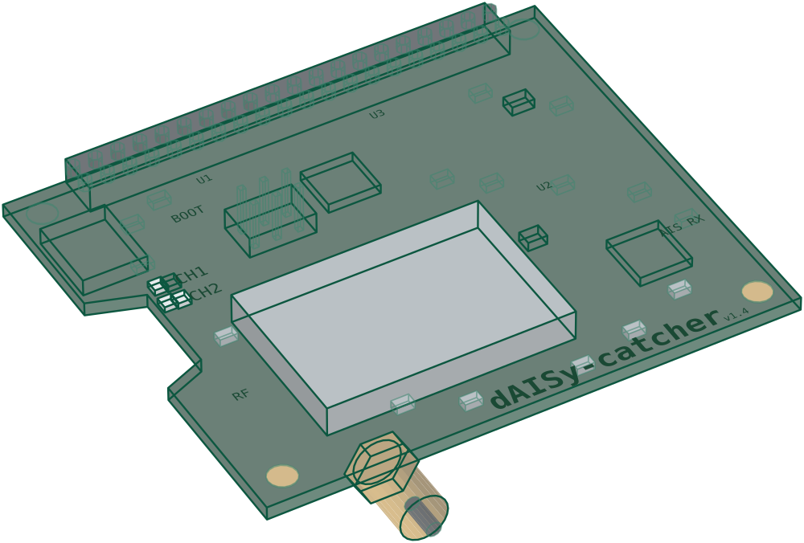

What you need.
Three parts: an antenna outside, a receiver, and a computer that runs AIS-catcher. The software is free, and you can start simple and grow the station later.
Three parts.
The antenna connects to the receiver, and the receiver to the computer.
A VHF antenna
Any antenna for marine VHF, around 162 MHz. Outside and as high as you can is best.
€70–140Glomex RA111AIS, from marine shops
A receiver
An RTL-SDR dongle, or a dAISy-catcher that decodes AIS on its own board. Which one?
$35–149RTL-SDR Blog V3 or dAISy-catcher
A computer
A Raspberry Pi runs AIS-catcher day and night on a few watts. A PC or a Mac works too. You watch the ships in your browser.
from $35Raspberry Pi 4, with its power supply and a 32 GB card
That is the whole station. AIS-catcher is free and open source: no subscription, and no special display.
Set it upWhich receiver?
Both work with AIS-catcher. They differ in where the radio work happens.
RTL-SDR Blog V3
A radio on a USB stick
AIS-catcher tunes it to AIS and decodes both channels on the computer, so its settings and decoding models are yours to try. Its TCXO keeps it on frequency as it warms up, where the cheapest sticks drift.
- The cheapest way in
- The computer does the radio work
- Linux, Windows and macOS
$35–40RTL-SDR Blog ↗

dAISy-catcher
A receiver made for AIS alone
Developed by Wegmatt with the AIS-catcher project. It decodes both AIS channels on the board, and AIS-catcher reads the messages over its serial line.
- No tuning and no driver
- Leaves the computer almost idle
- Over USB, or stacked on a Raspberry Pi
$149Wegmatt ↗
Prices from November 2026, before shipping, tax and import duties.
Give your antenna a view of the water.
Where the antenna goes decides what you receive, more than any part you can buy. VHF travels in a line of sight: water you can see from the antenna is water you can hear.
- High and outside. Every metre of height pushes the radio horizon further out.
- A short cable. Coax loses signal at 162 MHz. Or put the Pi next to the antenna and run a network cable: see antenna and cable.
- What to expect. From 5–10 m up, large ships typically come in from 25–30 km away.
- Just trying it out? The dongle's telescopic antenna, pulled out to about 44 cm, in a window facing the water shows the first ships in a busy area.

Practical hardware notes.
Skip these if you are ready to install.
Antenna and connectors
The Glomex RA111AIS is a 14 cm marine antenna tuned to AIS, sold with a mounting bracket and its cable. Its cable ends in a PL-259 plug, so add an adapter to SMA for the receiver. Wegmatt sells an SMA to SO-239 adapter for it.
Any marine VHF antenna works too.
The dAISy-catcher up close
Plug it in as a USB device, or stack it on a Raspberry Pi as a HAT. There is no driver to install and no filter or amplifier to try: the RF front end, the radio and the decoding sit on one board.

From the same shop: a Pi 4 case made for it ($14), a stacking kit for the Pi (from $4) and the SMA to SO-239 adapter for the Glomex cable ($5). One stacking kit, USB cable or RF adapter comes free with the receiver.
The setup wizard in the Quick Start finds it.
Already have a receiver or a computer?
Another receiver. AIS-catcher also works with AirSpy, SDRplay, HackRF and others, and with receivers on your network. See inputs.
Another computer. It runs on Linux, Windows and macOS, and in Docker. A Pi Zero 2 W is enough; a Pi 3 or newer is comfortable.
The internet. Only needed to install AIS-catcher and to share with the community map. Receiving and decoding run on your own machine.
Got the three parts?
Install AIS-catcher and run the setup wizard: it finds your receiver.